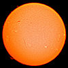
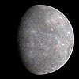
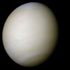
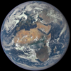
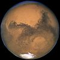
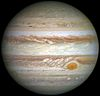
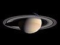
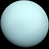
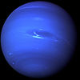
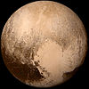

Сонячна система
Планетна система, що включає в себе центральну зорю — Сонце , і всі природні космічні
об'єкти
(планети, астероїди, комети, потоки сонячного вітру тощо), які об'єднуються гравітаційною взаємодією.
Сонячна система є частиною значно більшого комплексу, який складається із зірок і міжзоряної речовини —
галактики Чумацький Шлях.
Сонце складає ≈99,85 % маси Сонячної системи; газові планети-гіганти ( Юпітер, Сатурн, Уран і Нептун
) складають
99 % залишкової маси. Як і в інших зір, у надрах Сонця ефективно відбуваються термоядерні реакції з
виділенням енергії. Планети за фізичними характеристиками поділяють на дві групи. Ближче до Сонця
розташовані планети земної групи: Меркурій, Венера, Земля, Марс ; далі від Сонця розташувались
планети-гіганти:
Юпітер, Сатурн, Уран, Нептун.
Планети земної групи порівняно невеликі, їхня густина ≈5 г/см³; вони
складаються переважно з важких хімічних елементів; мають гаряче металеве ядро, оточене мантією із силікатних
порід, і верхній шар — кору. Планети-гіганти не мають твердої поверхні, бо за хімічним складом (99 %
гідрогену і гелію) і густиною (≈1 г/см³) вони нагадують зорі, а їхня велика маса спричиняє нагрівання ядер до
температури понад +10 000 °С.
Сонце

— єдина зоря Сонячної системи та її головна складова. Його маса (332 900 мас Землі) досить велика для
підтримання термоядерних реакцій синтезу в його надрах[24], внаслідок яких вивільняється велика кількість
енергії,
що випромінюється в простір здебільшого у вигляді електромагнітного випромінювання, максимум якого припадає
на
діапазон хвиль довжиною 400—700 нм, який відповідає видимому світлу.
За зоряною класифікацією Сонце — типова зоря головної послідовності класу G2. На головній послідовності
перебуває
більшість зір, а Сонце розташоване на ній приблизно посередині. Яскравіші та гарячіші від Сонця зорі досить
рідкісні, а тьмяніші та холодніші червоні карлики становлять 85 % зір у Чумацькому Шляху.
Розташування Сонця на головній послідовності означає, що воно ще не вичерпало свій запас водню для ядерного
синтезу й не досягло середини своєї еволюції. Зараз Сонце поступово стає яскравішим, на ранніх стадіях його
яскравість становила лише 70 відсотків теперішньої.
Сонце — зоря I типу зоряного населення, воно утворилося на порівняно пізньому етапі розвитку Всесвіту й
характеризується значним вмістом елементів, важчих від водню та гелію (в астрономії такі елементи називають
«металами»), ніж старші зорі II типу. Елементи, важчі за водень і гелій, утворилися в надрах перших зір,
тому,
перш ніж Всесвіт було збагачено цими елементами, мало проеволюціонувати перше покоління зір.
Вважається, що висока металічність була вкрай важлива для появи у Сонця планетної системи, тому що планети
формуються акрецією «металів»
Меркурій

— є найближчою до Сонця (0,4 а. о.) й найменшою планетою системи (0,055 маси Землі). У Меркурія
немає супутників, а його найпомітнішими, після ударних кратерів, деталями рельєфу є численні криволінійні
уступи довжиною до сотень кілометрів і висотою до 3 км. Ймовірно, вони виникли при стисканні планети
внаслідок поступового остигання її надр
.
Меркурій має вкрай розріджену атмосферу. Вона складається з атомів, «вибитих» із поверхні планети сонячним
вітром. Велике залізне ядро Меркурія та його тонка кора ще не отримали належного пояснення. Є гіпотеза, яка
припускає, що зовнішні шари планети, складені з легких елементів, зірвало внаслідок гігантського зіткнення,
яке зменшило розміри планети[46], а також запобігло повному поглинанню Меркурія молодим Сонцем.
Венера
— близька за розміром і масою до Землі (її маса становить 0,815 земної). Як і Земля, вона має потужну атмосферу та товсту силікатну оболонку навколо залізного ядра. На поверхні Венери є яскраві ознаки колишньої геологічної активності, в першу чергу вулканізму. Води в складі Венери майже немає, а її атмосфера в дев'яносто разів щільніша за земну. Це найгарячіша планета: температура її поверхні перевищує 400 °C. Причиною цього є парниковий ефект у щільній, багатій на вуглекислий газ атмосфері. Надійних ознак сучасної ендогенної геологічної активності на Венері не виявлено[джерело?], але, оскільки у неї немає магнітного поля, яке запобігло б виснаженню її наявної атмосфери, це дозволяє припустити, що її атмосфера регулярно поповнюється вулканічними виверженнями. Природних супутників у Венери немає.
Земля
— є найбільшою та найщільнішою серед внутрішніх планет. У Землі є один природний супутник — Місяць, це єдиний великий супутник планет земної групи. Серед планет земної групи Земля є унікальною (насамперед — гідросферою). Атмосфера Землі радикально відрізняється від атмосфер інших планет — вона містить вільний кисень. Питання про наявність життя де-небудь, крім Землі, залишається відкритим.
Марс
— менший за Землю та Венеру (0,107 маси Землі). Він має атмосферу, що складається переважно з вуглекислого газу, з поверхневим тиском 6,1 мбар (0,6 % від земного). На його поверхні є вулкани, найбільший із яких, Олімп, перевищує розмірами всі земні вулкани, досягаючи висоти 21,2 км. Рифтові западини (долини Марінера) свідчать про колишню тектонічну активність. Сучасної тектонічної та вулканічної активності на Марсі не зареєстровано, але, за деякими оцінками, Олімп востаннє вивергався не більше 2 млн років тому. Червоний колір поверхні Марса зумовлений великою кількістю оксиду заліза в його ґрунті. Планета має два супутники — Фобос і Деймос. Припускається, що вони являють собою захоплені астероїди.
Юпітер

— має масу, в 318 разів більшу від земної, і є в 2,5 рази масивнішим від усіх інших планет разом
узятих. Він складається здебільшого з водню і гелію. Висока внутрішня температура Юпітера викликає появу
численних напівпостійних вихрових структур в його атмосфері, таких як смуги хмар і Велика червона пляма.
Юпітер має 79 супутників. Чотири найбільших — Ганімед, Каллісто, Іо та Європа — подібні до планет земної
групи ендогенною активністю, зокрема тектонічною, а Іо — навіть вулканічною. Ганімед, найбільший
супутник в Сонячній системі, за розмірами перевищує Меркурій.
Сатурн

— відомий своєю системою кілець, має структуру атмосфери і магнітосфери, дещо подібну до відповідних
структур Юпітера. Хоча об'єм Сатурна дорівнює 60 % об'єму Юпітера, маса (95 мас Землі) — менша від третини
маси Юпітера; таким чином, Сатурн — найменш щільна планета Сонячної системи (його середня густина менша за
густину води).
Сатурн має 82 підтверджених супутники; два з них — Титан і Енцелад — проявляють ознаки геологічної
активності. Ця активність, однак, не подібна до земної, оскільки значною мірою обумовлена активністю
льоду. Титан, який за розмірами більший за Меркурій, — єдиний супутник в Сонячній системі, що має
атмосферу.
Уран

— з масою, в 14 разів більшою, ніж у Землі, є найлегшою із зовнішніх планет. Унікальним серед інших планет
його робить те, що він обертається «лежачи на боці»: нахил осі його обертання до площини екліптики дорівнює
приблизно 98°. Якщо інші планети можна порівняти з дзиґою, що обертається, то Уран більше схожий на
кульку, яка котиться. Він має набагато холодніше ядро, ніж інші газові гіганти, і випромінює в космос дуже
мало тепла.
Відкрито 27 супутників Урана; найбільші з них — Титанія, Оберон, Умбріель, Аріель і Міранда.
Нептун

— хоча і дещо менший від Урана, але масивніший (17 мас Землі) і тому щільніший. Він випромінює
більше внутрішнього тепла, але не так багато, як Юпітер чи Сатурн.
Нептун має 14 відомих супутників. Найбільший з них — Тритон, є геологічно активним, з гейзерами рідкого
азоту. Тритон — єдиний великий супутник, що рухається в зворотному напрямку. Також Нептун супроводжують
астероїди, що називаються троянцями Нептуна, які перебувають з ним в резонансі 1:1.
Плутон

- карликова планета, найбільший відомий об'єкт поясу Койпера. Після виявлення в 1930 році вважався дев'ятою
планетою; ситуація змінилася у 2006 році з прийняттям формального визначення планети. У Плутона помірний
ексцентриситет орбіти з нахилом 17 градусів до площини екліптики, і він то наближається до Сонця на відстань
29,6 а. о., стаючи до нього ближче Нептуна, то віддаляється на 49,3 а. о.
Незрозуміла ситуація з найбільшим супутником Плутона — Хароном: чи він і надалі класифікуватиметься як
супутник Плутона, чи буде перекласифікований в карликову планету. Оскільки центр мас системи Плутон — Харон
розташовується поза ними, вони можуть розглядатися як подвійна планетна система. Чотири менших супутники —
Нікта, Гідра, Кербер і Стікс — обертаються навколо Плутона і Харона.
Плутон перебуває з Нептуном в орбітальному резонансі 3:2 — на кожні три оберти Нептуна навколо Сонця
припадає два оберти Плутона, увесь цикл займає 500 років. Об'єкти поясу Койпера, орбіти яких мають такий же
резонанс, називаються плутино.